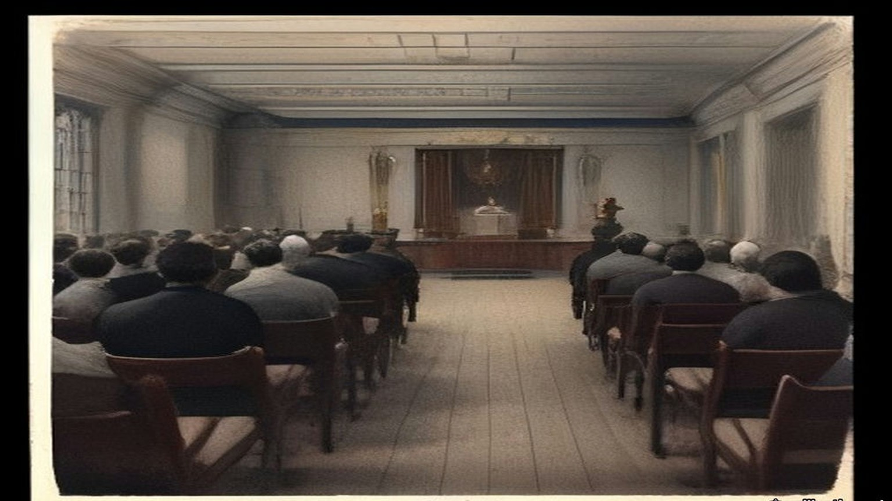
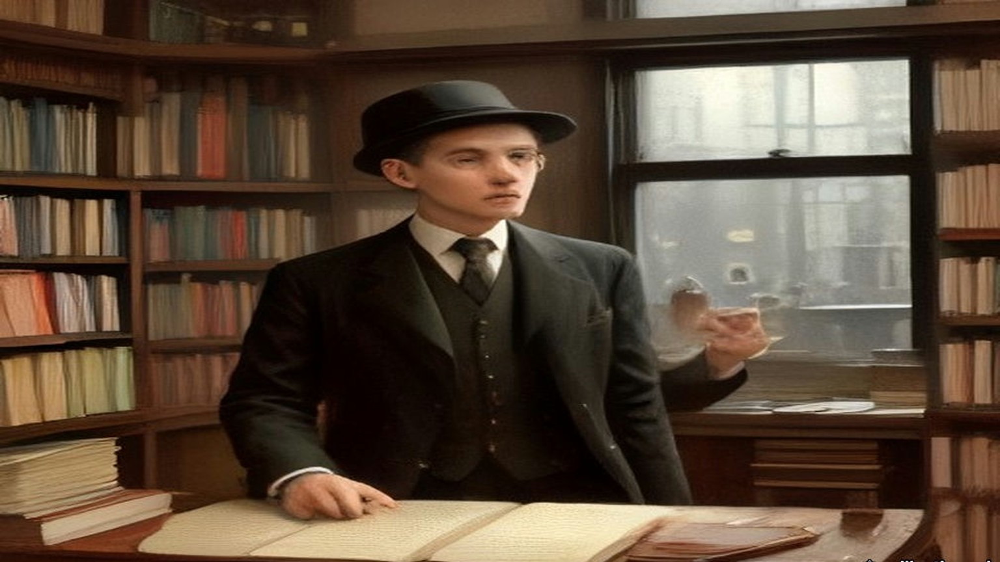
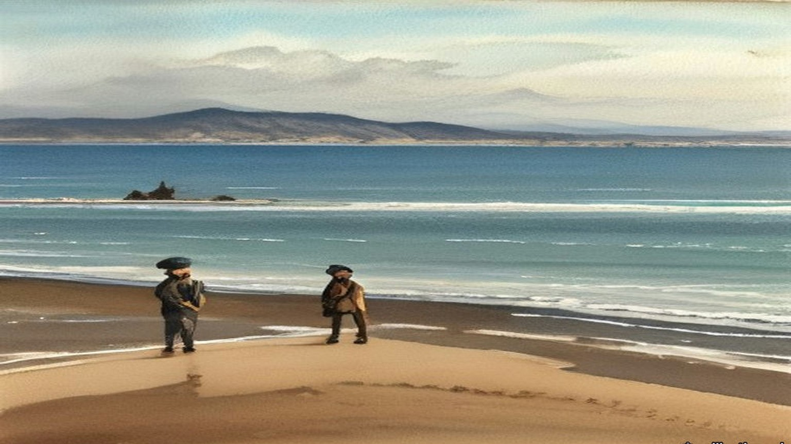
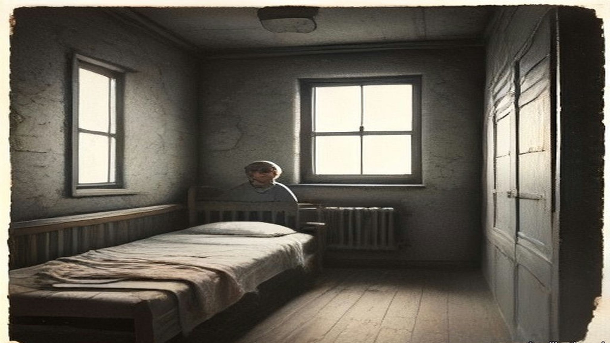
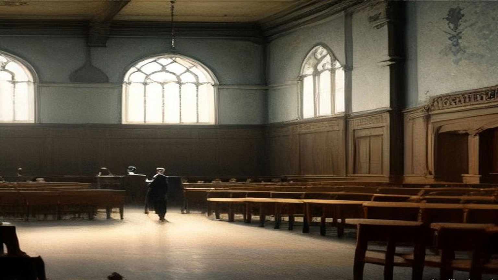
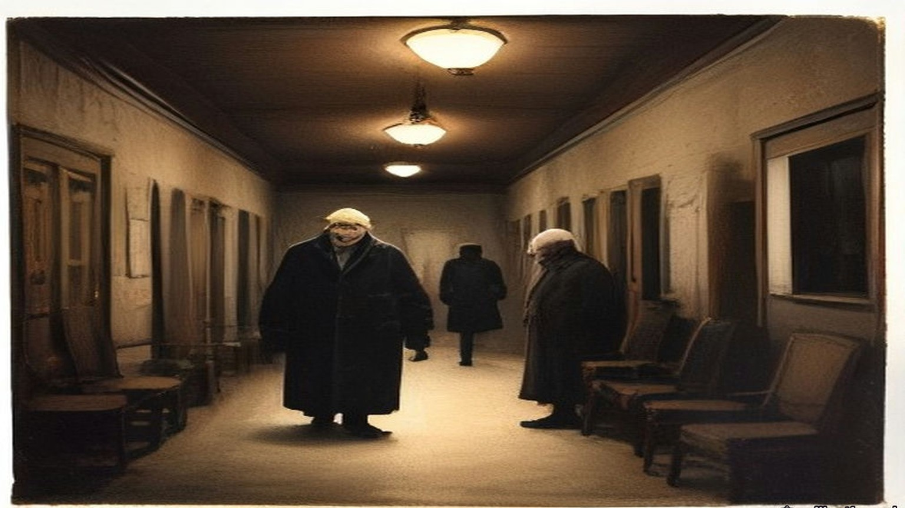
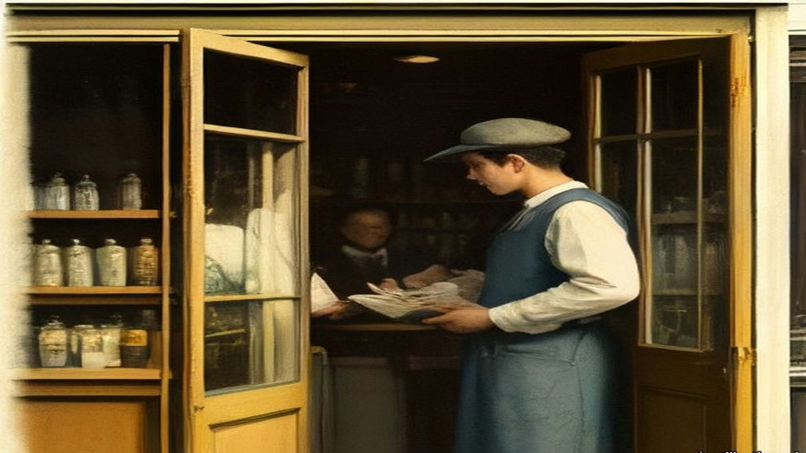

Chapter 16
Fifty Proxies at Dundalk, 1892–1915
Dublin, Dollymount, Westminster, Ennistymon, Belfast, Rockcorry, Inns Quay and Dundalk, 1892 to 1915
On Friday, 25 November 1892, Douglas Hyde stood up before the Irish National Literary Society in Dublin to read a paper with a long title, "The Necessity for De-Anglicising the Irish Nation." He had come up to Dublin years before to go to college, knowing nobody in the city. He went to a meeting of the Society for the Preservation of the Irish Language, and the first stranger he got to know in Dublin was there, O'Neill Russell, a big man of six foot two or three who was delighted to hear him speaking Irish. Russell sold whiskey in America as a commercial traveller. He told Hyde he had once given his last dollar to James Stephens, in a New York hall, when the Fenian leader swore before an enormous crowd that there would be a rising in Ireland before the month was out. Stephens never went to Ireland. Sometimes only three or four people turned up to the Society's meetings. Its secretary, who was also secretary to the Royal Irish Academy, was paid forty pounds a year for his services.
He began by saying what he did not mean. He did not mean a protest against imitating what was best in the English people, "for that would be absurd." He meant "to show the folly of neglecting what is Irish, and hastening to adopt, pell-mell, and indiscriminately, everything that is English, simply because it is English." The question, he said, "ought also to claim the sympathies of every intelligent Unionist, and which, as I know, does claim the sympathy of many."
Then he put a price on it. He asked the room to suppose a hundred years of good English government, "making Ireland a land of wealth and factories," which left the country at the end "fat, wealthy, and populous, but with all our characteristics gone." The O's and the Macs dropped, the language extinct, the names of the rebels and martyrs blotted out. "How many Irishmen are there who would purchase material prosperity at such a price?"
He said he had known fifteen Irish workmen in a haggard in England who gave up talking Irish among themselves because the English farmer laughed at them.
He ended by appealing "to every one whatever his politics, for this is no political matter."

The Gaelic League came out of that paper the following summer. Hyde was its president. In its first years it was so poor that a gift of £300 could keep it going, and Hyde got one by staying out of politics. Patrick Forde of the Irish World, the New York paper that stood behind the Irish Parliamentary Party in America, wrote to him privately and asked why he did not take up politics and make the League an adjunct to the Party. Hyde wrote back at length. Most of the branches, he told Forde, were run by National Teachers and Customs and Excise officers, men barred by rigid rules from taking part in anything political, and many of them full of national feeling with nowhere to put it. The League gave them somewhere. He thought it the best paper he ever wrote. Forde raised £300 in his paper for the League, "at a time when even that small sum meant everything to us." Hyde kept a copy of his letter in a drawer. Years afterwards he went to look for it. The mice had bored a hole into the drawer and eaten that letter and no other paper in it.
Sir Horace Plunkett said kind things about the League too. Hyde reckoned that those words "were worth any money to the League," because with Plunkett on side and every other party agreed, "it became impossible for the Irish Government to send out the 'hard word' to the Intermediate Nat[l] Boards."
* * *
Dublin, March 1905 to 1907
Ernest Blythe came down from the north in March 1905 to be a Boy Clerk in the Department of Agriculture. He was a week or two short of sixteen. His father had a farm about twelve miles outside Belfast, and the family were Protestants.
He had always wanted to learn Irish. He had been in the city about an hour when he heard three people speaking it outside the Gaelic League Book-shop. He stopped at the window. He looked at the books and listened to the sound of it, a language he could not follow a word of, and he stood there as long as the three of them talked. When they went their ways he went in and bought the first book of O'Growney's Easy Lessons.
That night he went to the Queen's Theatre. The play was a melodrama called The Lights of London, the first play he had ever seen. In the intervals, with the lights up and the crowd talking round him, he opened O'Growney on his knee and started.
He did not join the League. For months he was afraid to. He believed that if it were found out that he was a Protestant he would be put out. He sat in his lodgings with the book and got as far as a man can get with a book alone, and then he was stuck.
In November Douglas Hyde set out for America. There was a demonstration for him in O'Connell Street. Blythe plucked up his courage that week and joined the Central Branch. His first teacher was Sinéad Ní Fhlannagáin. For four or five months he kept himself to himself in the class. Then he began to talk to the man beside him, George Irvine, and Irvine told him about Griffith's paper, the United Irishman. Blythe sat up the whole of one night reading his first copy.
He joined the branch hurling club. So did Seán O'Casey. They were both very bad hurlers and never got on the team, and every Saturday they practised in the Phoenix Park anyway, and went together to watch the club play. After some months O'Casey began to talk about the Fenians.
One Saturday evening, coming home on the tram from the Park, O'Casey said it was a great pity the Fenian organisation had not survived. Blythe agreed. At the end of Blessington Street O'Casey asked him to get off the tram, because he wanted to talk to him. They walked up Hardwicke Street together in the dusk. O'Casey told him the Fenian organisation was still alive, and was recruiting young men again, and asked him to join.
Blythe had read about the Invincibles and the Phoenix Park murders. He said he did not favour assassination and would have nothing to do with an organisation that countenanced it. O'Casey said the Fenians were completely against assassination. Their policy was to prepare to make open war on England. Blythe said he would give his answer the following week. Within a couple of days he knew what it would be.
When he told O'Casey he was willing, O'Casey said that he was a stranger to Dublin and unknown to the people with authority, and he would have to be kept under observation for some months. It was a long few months. Blythe found out later that O'Casey had asked him on impulse, without authority, and the observation was the time it took O'Casey to get leave to have asked.
At last O'Casey met him in O'Connell Street and took him to a house on the western side of Parnell Square. People were going up the stairs ahead of them. On the landing he was introduced to Mícheál Mac Amhlaidh, who took him into a back room and gave him the Oath. Then he went into the front room with O'Casey while the other new men were sworn. The room was packed, over a hundred people standing in it. At one point the new members were asked to stand up and let themselves be seen. Blythe got to his feet with four or five others and stood there with the whole room looking at him.
The circle's name to the world was the Bartholomew Teeling Literary and Debating Society. Seán T. O'Kelly was in it, and Cathal Brugha, and Thomas Cuffe, a great friend of Griffith's, and many people who were prominent in the Gaelic League. Blythe was just eighteen.
Some time after, he was mobilised suddenly one Sunday afternoon for a meeting that night in Clontarf Town Hall. Members had been mentioning the organisation in Confession, and the priests had told them to get out of it. A priest who was himself a member was to speak. In the hall Blythe saw men he would never have suspected, among them Jack Shouldice, who was over him in the Department of Agriculture. The priest was a Father O'Sullivan, on the Mission in America. Blythe waited to hear him explain why the Brotherhood was not a condemned secret society. The priest never touched the point. He said he was a member, that he had no conscientious troubles, and he made a patriotic speech. For a good while after that no one else left.
A Boy Clerk's service ended at twenty. As the date came near Blythe looked for work as a reporter, and a month before his twentieth birthday the proprietor of the North Down Herald in Bangor took him on. In Belfast he joined a circle of about fifteen that met in the workshop behind Denis McCullough's premises. The Dublin men had started a rifle fund after he left. The Belfast circle started an arms fund of its own in imitation, but there were so few of them and the collections came in so slowly that they bought only automatic pistols. In Blythe's time they raised the price of five or six. The pistols were shared out among the members by lot.

* * *
The Colonel John O'Mahony Hurling Club, Dollymount, 1907
Patrick O'Daly was nineteen in 1907. His two older brothers, Seamus and Frank, were in the organisation already.
The club was a hurling club, the Colonel John O'Mahony, and it had a clubroom. In the evenings there were Irish classes in it, and debates, and Irish dancing. Seán O'Byrne came to some of the debates, and the Ingoldsbys, and Tom Wheatley. The talk ran to Irish history, and warfare, and other military subjects. Paddy Ingoldsby swore O'Daly in some time that year. Most of the hurlers in the club were members already.
His circle was the Fintan Lalor. Ingoldsby was the Centre and Bulmer Hobson the secretary. Seán Mac Diarmada was in it, and Patrick and Willie Pearse, and Seán O'Byrne, and Seán O'Casey, and Seamus O'Connor. They met at 41 Parnell Square.
They began to drill long before there were any Volunteers, with Seán Heuston as their training officer. Every man of them bought a rifle. They paid it off, so much a week, into the circle.
In 1909 or 1910 O'Daly was at a meeting in Clontarf Town Hall for every member in Dublin. A Father O'Sullivan from America explained the Church's attitude to secret societies, and to O'Daly's mind he proved that the Brotherhood was not banned. Ernest Blythe heard the same priest in the same hall and remembered that he never touched the point at all.
Seán T. O'Kelly watched the League spread. From 1898 on, he wrote long afterwards, "there was not a village or hamlet in Ireland that did not have its branch of the Gaelic League." Teachers were what the branches lacked. A young man who had got through the first few books of O'Growney was put in front of a class of beginners and told to teach it. That had happened to O'Kelly himself. In March 1903 the Coiste Gnótha, the League's executive, made Patrick Pearse editor of its paper, An Claidheamh Soluis, and at the same meeting made O'Kelly its manager.
* * *
Dublin, November 1913
In August 1913 Pearse wrote about a friend and colleague in the Gaelic League who writes to the press "to point out that you are selling the League to the Liberals and that your reward will be a title." That was not a lie, Pearse wrote. It was the man's way of hinting that you ought to smite a little harder. Then he wrote about Hyde. "I love and honour Douglas Hyde." He had served under him since he was a boy. "I have never failed him. He has never failed me."
In November 1913, by his own account, a group of nationalists he was in touch with had decided to found the Irish Volunteers, and were looking about for a leader who would bring in men less "advanced" than themselves. That month Pearse wrote an essay he called "The Coming Revolution," and he wrote it to Gaelic Leaguers.
"If we do not believe in the divinity of our people we have had no business, or very little, all these years in the Gaelic League." Without that belief, he wrote, they would have made their peace with the devil, who "liberally rewards with attorney-generalships, bank balances, villa residences, and so forth, the great and the little who serve him well." They had turned their backs on all of it. "We did it for the sake of Ireland. In other words, we had one and all of us (at least, I had, and I hope that all you had) an ulterior motive in joining the Gaelic League. We never meant to be Gaelic Leaguers and nothing more than Gaelic Leaguers."
"For this we went to school to the Gaelic League. It was a good school, and we love its name and will champion its fame throughout all the days of our later fighting and striving. But we do not propose to remain schoolboys for ever."
Hyde had promised Forde and Plunkett and the whole country that the League was a language movement and nothing else. Years later he wrote that he had pledged himself "before the country, pledged to the very teeth." The trouble had never been the Parliamentary men. "The trouble was to keep out politics of the Wolfe Tone or Fenian type."

* * *
The House of Commons, February to July 1915
The war was six months old. On 10 February 1915 Philip Morrell asked the Financial Secretary to the War Office about soldiers whose wives had left them. Could the separation allowance go to whoever the man really kept at home, as it would for an unmarried man? H. T. Baker answered that, subject to the Select Committee's report, "the grant of allowances to dependants is confined to married soldiers."
On 28 April Sir Frederick Banbury asked the Under-Secretary for War whether he knew that the rules of the Gaelic Athletic Association shut out of its clubs "all soldiers, sailors of the Royal Navy, miltiamen, or pensioners of the Army and Navy," and that at its annual meeting on the 4th a motion to suspend the rule for the duration of the war had been withdrawn. Harold Tennant said he understood the facts were as stated. "In the circumstances no action is contemplated." James O'Connor asked whether the minister knew that the Association "declines to be regarded as a Nationalist organisation." P. J. Meehan asked whether he knew that most of the reservists and recruits who had joined in Ireland were members of it. Tennant said very little information about that society had reached the War Office.
On 9 June Laurence Ginnell asked where Mr. Shawn MacDermott was. Augustine Birrell, the Chief Secretary, told him. MacDermott had been arrested "on a charge of making statements likely to prejudice the recruiting of His Majesty's Forces contrary to Regulation No. 27." He was being tried that day in Dublin. Eight days later Ginnell asked how MacDermott, "a delicate man," was faring under his heavy sentence. "I can only say that the greatest possible care and attention is being paid to him."
On 21 June Birrell explained why Francis Sheehy Skeffington had been tried without a jury. The competent military authority had determined his case could be adequately dealt with by a Court of Summary Jurisdiction. Asked how many people in Ireland had been prosecuted for statements calculated to prejudice recruiting, Birrell said, "The answer is twenty-seven." Was it alleged that any of them had succeeded in prejudicing recruiting? "I cannot say that they have been successful in their object."
On 19 July Ginnell asked how many students had sat Irish and German before the Intermediate Education Board in 1914, and how many prizes each had won. Birrell gave the candidates: 6,033 in Irish, 1,859 in German. Ginnell pressed him for the prizes.
"How many?"
"I do not know how many, but prizes to the value of £82 were awarded for German, and to the value of £74 for Irish."
A few minutes earlier, by private notice, Arthur Lynch had asked about an order for deportation served on Mr. Ernest Blythe at Ennistymon, West Clare, "on Monday last." Birrell said the question should go to the Under-Secretary for War. Two days later Tennant answered for the orders together. They had been issued "by and on the initiative of the competent military authority," under Article 14 of the Defence of the Realm Regulations, against persons suspected of acting in a manner prejudicial to the public safety.
* * *
Ennistymon, Belfast and Rockcorry, July 1915
Blythe was a Volunteer organiser now, going round county Clare on a bicycle. He was sharing a room in Miss McCormack's hotel in Ennistymon with Eamon Waldron, the local múinteoir taistil, the League's travelling teacher. At about half past eight in the morning the door opened and a District Inspector came in, with a sergeant and a couple of constables behind him.
The Inspector came to the side of the bed. Blythe lay there under the blanket and listened to him read out an order under the Defence of the Realm Act, signed by Major-General Friend, directing him to leave the "following area, namely Ireland," within about a fortnight.
He got up and looked up the trains.
He wired Volunteer Headquarters that he had got the order and was coming to town. He took an early train to Limerick and went on to Dublin. At Headquarters he said he would not obey it. He would not hide either. He would wait to be arrested. He went round to the paper's offices in D'Olier Street and found Arthur Griffith there. Griffith agreed with him. Griffith thought it would be good for the propaganda if he could be arrested in the house of a parish priest. Blythe said every bit of help he had ever got organising Volunteers had come from curates, and he did not know a parish priest who would take him in. Griffith said Father Ó Ciaráin of Rockcorry, in county Monaghan, would be delighted, and he would write to him that night.
Then Blythe went to see Tom Clarke. The news had reached Dublin by then. The same orders had been served on Liam Mellows, Denis McCullough and Herbert Moore Pim.
The night before the order ran out they held a meeting on the Falls Road in Belfast. McCullough spoke, and Pim, and Blythe, and others. There was a big crowd and a great deal of cheering. In the morning Blythe set off for Rockcorry.
He went out bicycling with Father Ó Ciaráin the first afternoon. Then he stayed in the house and waited. For the best part of a week no police came. He did not go out. He sent postcards to people saying where he was. At last they came, early one morning, very apologetic. The priest made the proper protest about the invasion of the parochial house. Blythe was let finish his breakfast.
At the barracks the sergeant kept going out to telegraph. Nobody seemed to know what to do with him. About two o'clock the sergeant's wife sent him in a dinner. Late in the evening a motor car came, and with the sergeant and two constables he was driven to Belfast jail. It was his first drive in a motor car. They put him for the night in one of the half-underground cells for prisoners who came in too late to be received. Lying in the dark he thought how easy it would be for them to forget a prisoner down there and leave him till he starved. In the morning the door opened.
They gave him three months, without hard labour, so he had a mattress from the first night. He was locked in his cell twenty-two hours a day, and he worked hard at mat-making to get through them. He got quick at it. One of the jobs given him was a set of high-pile floor mats for the hall of a Belfast doctor. In the first month there were no library books, only a reader for the second class of a National School once a week, which took five or six minutes, and the Bible, and a bound volume of a magazine called The Quiver. The Quiver had a page of cookery recipes every month. The prison food was plain. He read the recipes over and over.

* * *
Inns Quay and Dublin, June and July 1915
Diarmuid Lynch had been State President of the Gaelic League of New York. The Irish World, the same paper whose Patrick Forde had once raised £300 for Hyde, had complained in its "Gaelic Notes" that the League in New York was dominated by the Clan na Gael. Lynch said it was not, though many of its men were in the Clan. When colleagues asked him to join the Clan he refused, so that he could say he was not a member if the Irish World came at them again, and he explained himself to John Devoy, who agreed. He had come home in 1907 and settled in Dublin in 1908, and Seán T. O'Kelly had approached him there and brought him into the Bartholomew Teeling Circle. Since the end of 1911 he had sat on the Supreme Council of the Brotherhood as Divisional Centre for Munster. In law he was an American citizen.
In June 1915 he was ordered to register with the police as a "Friendly Alien," and to report to them every time he left one proclaimed area and entered another. He did not register, and he was summoned before a magistrate at Inns Quay. Tom Clarke wanted him to refuse outright. Deportation to the United States was certain to follow, Clarke said, and that would give the Clan na Gael material for anti-British propaganda. Lynch thought of the fight that was coming and wanted to be in Ireland for it. He registered just before he went into court, and the charge was dismissed.
He had sat on the Coiste Gnótha of the League. His Irish was too slight for him to speak in the debates, or to appeal from the ruling of the chair, as any American delegate would have done at home. At the Ard-Fheis in Galway in 1913 Hyde's rulings seemed to him one-sided from beginning to end, and all Lynch could do was put the one question he had the Irish for: "An tusa an Ard Fheis?" Are you the Ard-Fheis?
By the summer of 1915, he wrote afterwards, "when the stage was secretly set for Insurrection against Britain, the time had come in my opinion when the 'Left Wing' should control the Coiste Gnotha - not to use it for the propagation of Republicanism but to obviate the possibility of tactics contrary thereto."
Well before the date of the Ard-Fheis he wrote to prominent Gaelic Leaguers up and down the country who were also IRB men, urging that delegates "favourable to our political views" should without fail be selected for Dundalk. His colleagues on the Coiste suggested they try to elect men who were in prison: Seán Mac Diarmada, Ernest Blythe, and one other whose name Lynch no longer remembered. Their election would convey "a salutary lesson to all concerned."
* * *
The Ard-Fheis, Dundalk, the last week of July 1915
The Oireachtas of 1915 met in Dundalk with the war a year old. A great number of the delegates were Volunteers. Hyde could feel the politics in the air of the room before anyone stood up. Several items on the agenda were aimed at himself.
He had held the presidency for twenty-one years. He had been getting headaches. The monthly meetings of the Coiste in Dublin dragged on from eight in the evening to three or four in the morning, and they always knocked him up. All through them he kept smiling while his inside was seething with fury, and that was worse for him than the hours. Between meetings he hardly had a day to himself for the League's letters.
He presided for two or three days. Father Maguire and some other priests of the North could not express themselves in Irish, and when the Ard-Fheis refused to hear them in English they got up with their followers and began to walk out of the room. Hyde stopped them at the door. He told them a split of that kind would be the beginning of the end of the Gaelic League. He got leave for Father Maguire to speak in English, and he had to fight the hall for it.
Then came the motion. Pádraig Ó Máille of Oughterard had put down a resolution in the name of a Connemara branch to add a third object to the League's two. The two were to revive the language and to encourage native industries. The third was to make Ireland free of foreign rule. Gall-smacht was the word in it.
Hyde had made up his mind irrevocably. If it passed, he would gather up his papers, vacate the chair and walk out of the Ard-Fheis. He had said in public again and again that the League was non-political and that he would never allow it to be made political while he was president. He had told the Coiste many times that if the League became political he would be the first man to leave it.
Colonel Moore stood up. He had not come near the League for years, and he knew nothing of any of this. He proposed that the words saor ó Ghallsmacht, free from foreign domination, should come out, and the simple word "free" go in.
Hyde pressed him to say what kind of freedom he meant. If they meant freedom from English rule, he said, the resolution was political. He pressed the others too, over and over. Colonel Moore kept saying that Asquith himself had called them a free people, when he spoke in Dublin about "a free gift from a free people." Nobody would define the word. Hyde said that during the year he would interpret it in a non-political sense.
Seán Ó Ceallaigh, who wrote as Sceilg, brought up a long litany of grievances against rulings Hyde had given in the past year, most of which Hyde had forgotten. His remedy was to propose solemnly that the president should not be allowed "to rule out of order anything that was of national importance." When Hyde wrote it down in 1918 he put two exclamation marks after it, and two more after the words "meaning thereby his own political resolutions." Sceilg was soon afterwards elected a Vice-President.
The resolution on the word "free" passed by a large majority. Then the election to the Coiste Gnótha began.

* * *
A delegate's paper, the same day
Hyde was told afterwards, by several people, how fifty of the votes came into the hall. Seán Ó Muirthile had been given fifty proxies to share out among Irish speakers. They told Hyde he had handed them over in one bunch to the secretary of the Sinn Féin society in Dundalk, and the secretary handed them out to fifty Sinn Féiners.
The secretary gave me mine at the door of the rooms, a bit of paper with a name wrote on it that wasn't my name, and the list along with it. Put your mark against them ones, he said, and nothing else, and then you can go home.
I never was in the League. I never was in a branch of it nor a class. I'd say I knew ten words of the Irish, and most of them out of the prayers.
Inside it was full, and hot, and the windows shut. Men in their good suits, and a good many in the green with the leather belts, and the smell of the drink off one or two of them already, and the clergy up near the front. And all of it in Irish. A man would be up on his feet going hard at it and the half of the hall clapping and I didn't know was he for us or against us. I kept my eyes on the man in front of me and clapped when he clapped.
Somebody up at the table was looking down the hall. I went hot from the collar up. I thought any minute now some man will turn and say a word to me in Irish and I'll be stood there like a stook.
Nobody turned.
When it was time I went up with the rest of them and gave in the paper and made my marks where I was told. There was names on that list I knew from the papers. There was one of them in the jail that very day. My hand was steady enough. It was easier than the pictures.
Then I went out the door into the evening. The air was cold and grand after the inside of the hall. I went home for my tea. I never went back.
* * *
Dundalk, about midnight
That night Hyde did some furious thinking. About twelve o'clock he went to Pádraig Ó Dálaigh, the League's secretary for about a dozen years, and found out from him how the count was going. It was far enough on to show him what was coming. There would not be more than a dozen men on the new Coiste Gnótha who would support any consistently non-political line. And at least two men who had been tried or convicted for treason felony were going in high up in the poll.
That decided him. He sat down and wrote a letter to Ó Dálaigh, to be read out next day when the time came to elect the president. In it he declined the honour of re-election, if anyone should propose him, on the grounds of health.
He wrote in 1918 that he had retired "on very real grounds."
Lynch had been at the caucus. The delegates who were his friends at Dundalk, not all of them IRB men, had held a meeting and decided with one exception to run the prisoners, and the nominations were made. He was in the hall when the result was read. He wrote his account of that night for the Bureau of Military History.
"As the result of the ballot was being announced and Sean MacDiarmada's name appeared high on the list, An Craoibhin's uneasiness became apparent. When the election of prisoner was read Dr. Hyde swept his papers from the rostrum and left the Convention Hall. A delegation to him at his hotel brought back word that he had resigned from the presidency. This situation had not been sought or expected by us."
Hyde says he decided at midnight, from Ó Dálaigh's figures, and left a letter. Lynch says he swept his papers off the rostrum when the prisoner's name was read, and that the word came back from the hotel.
Lynch wrote one more thing about it. Had Hyde given his resignation as an ultimatum when the list of nominations was read, they would not have swerved from their plan "at that juncture in national affairs." "The new Coiste was safe from the I.R.B. viewpoint."

* * *
Dundalk to Dublin, the following day
In the morning Hyde appeared as usual and talked to everybody. He arranged with Peadar Mac Guiley, as the transcription of his manuscript gives the name, to take the chair at two o'clock. About one he slipped away. He got his baggage out of the hotel without anyone noticing, climbed into the hotel bus, and was driven to the station.
The train pulled out for Dublin, and Hyde had a lighter heart than he had known for years.
That same afternoon the Ard-Fheis passed a resolution against conscription. He heard about it afterwards.
Ó Dálaigh resigned as secretary at the same time as Hyde. Hyde had known he was going, and it was a strong part of why he had not stayed on himself. The best organiser the League ever had, Fíonán Mac Coluim, ought to have been the next secretary, Hyde thought, but he was suspected of Parliamentary leanings. They put in Seán T. O'Kelly. Soon after, Dr. Henry of Galway moved at the new Coiste that the League reaffirm its non-political character. The motion was rejected, and Henry resigned, and Father Mac Illenny of Spiddal with him, and Pádraig Brett of Waterford. Henry said they had elected a man from Ballymote, a town where he stayed every year with his people, whose name he had never once heard in connection with the language. The man had been elected "simply because he had distributed guns through the County Sligo."
In a later note Hyde wrote down what had happened to the League as he saw it. Politics of the Wolfe Tone or Fenian type had come on with a rush in 1914 and 1915 "and ended by capturing the League, its officers its machinery and its money."
Lynch was back in Dublin a day or two before Sunday, 1 August. He was on the committee for O'Donovan Rossa's funeral that day, though he had had hardly any hand in the arrangements. He had been busy with the Ard-Fheis at Dundalk.
At a meeting in Dublin that summer the Supreme Council co-opted new members: Tom Clarke, Seán Mac Diarmada, Patrick Pearse and Dr. McCartan.
Towards the end of August Robert Monteith was ready to go to Germany by way of New York. Clarke and Lynch decided to give him £100 for his expenses. The money was handed to him in Tom's shop.

Important names
- Griffith, Arthur (6 mentions in this chapter): Founder of Sinn Féin and signatory of the 1921 Anglo-Irish Treaty.
- O'Connell, Daniel (2 mentions in this chapter): Irish political leader who led the campaigns for Catholic Emancipation and the Repeal of the Union.
- Parnell, Charles Stewart (2 mentions in this chapter): Leader of the Irish Parliamentary Party and president of the Irish National Land League.
- Parnell, Henry (2 mentions in this chapter): Irish MP and financial reformer who advocated the repeal of the 1800 Union protective duties.
- Plunkett, Horace (3 mentions in this chapter): Irish agricultural reformer and founder of the cooperative creamery movement.
- Russell, Lord John (2 mentions in this chapter): British Whig Prime Minister during the height of the Irish Famine (1846–1852).
Sources
- Douglas Hyde, "The Necessity for De-Anglicising the Irish Nation," address to the Irish National Literary Society, Dublin, 25 November 1892. Read in the user's first-edition source pack (file chapter_12/deanglicising_ireland_hyde.html), a transcription with abridgements marked by ellipses, published by gaeilge.org (https://www.gaeilge.org/deanglicising.html). The full printed text is in The Revival of Irish Literature (London, 1894), which I did not open. Quoted: "for that would be absurd"; "to show the folly of neglecting what is Irish..."; "every intelligent Unionist"; "making Ireland a land of wealth and factories"; "fat, wealthy, and populous, but with all our characteristics gone"; "How many Irishmen are there who would purchase material prosperity at such a price?"; the fifteen workmen in a haggard; "for this is no political matter." The transcription sets that phrase between dashes; the dashes are dropped here and the words are unchanged.
- Douglas Hyde, untitled memoir manuscripts, Luke Wadding Collection, UCD Digital Library (https://digital.ucd.ie/view/ivrla:18726), read in the FromThePage transcription by Rachel Daly. (a) The account of the Dundalk Oireachtas, headed "Scríofa agus mé i mo leaba, aibreán 1918. Baile Átha Cliath," leaves 1–20: the war "raging for a year"; "a great number of the delegates were volunteers"; items "levelled against myself personally"; presiding "two or three days"; Father Maguire and the northern priests, the walk-out stopped, leave "with extreme difficulty" to speak English; Pádraig Ó Máille's Connemara resolution and "Gall-smacht"; the two aims; "I would gather up my papers, vacate the chair, and walk out"; Colonel Moore, "saor ó Ghallsmacht," the word "free," Asquith's "a free gift from a free people"; "Nobody would define the word free"; "passed by a large majority"; Seán Ó Muirthile (Hyde writes "O Murthuile") and the fifty proxies, "handed over in one bunch to the secretary of the Sinn Fein society in Dundalk," men who "did not know Irish ... had never even joined a branch," walked in, voted "a pre-arranged ticket" and "were never seen again"; "furious thinking"; about 12 o'clock and Ó Dálaigh; "not more than a dozen men"; "at least two men who were tried or convicted for treason felony"; the letter to Ó Dálaigh declining re-election "on grounds of health"; the presidency "held for 21 years"; "on very real grounds"; the Coiste meetings from 8 p.m. to 3 or 4 a.m., the headaches, "keep smiling while my inside was seething with fury"; the correspondence; Sceilg's motion; slipping away at about 1 p.m. "after appearing as usual and talking to everybody"; Peadar Mc Guiley in the chair at 2; the baggage, the hotel bus, the train, "a lighter heart than I had known for years"; the conscription resolution; Dr. Henry, Father Mc Illenny of Spiddal, Pádraig Brett, the Ballymote man "elected by a political vote simply because he had distributed guns through the County Sligo"; Ó Dálaigh's resignation and secretaryship of "about a dozen years"; Fíonán Mac Coluim; Seán T. O'Kelly. (b) The undated account of the League's non-political policy, leaves 1–9: Forde of the Irish World, the private letter, the branches run by National Teachers and Customs and Excise officers barred by rigid rules from politics, "Forde raised £300 in his paper for the League, at a time when even that small sum meant everything to us," the copy eaten by mice; Plunkett's words "worth any money to the League" and the "hard word" to the Intermediate and National Boards; "The trouble was to keep out politics of the Wolfe Tone or Fenian type"; "came on with a rush in 1914 and 1915 and ended by capturing the League, its officers its machinery and its money"; "pledged before the country, pledged to the very teeth." The clean reading is followed; Hyde's crossings-out are left out. (c) The memoir of O'Neill Russell, headed "Scríofa agus mé i mo leaba, Samhain 1919," leaves 4–8: coming to Dublin for college knowing nobody; the Society for the Preservation of the Irish Language; Russell "the first stranger whose acquaintance I made in Dublin," "six feet two or three," a commercial traveller for a whiskey firm; "his last dollar to James Stephens" in a New York hall; "Sometimes only three or four turned up"; the secretary, also secretary to the Royal Irish Academy, "paid 40 a year," the OCR dropping the currency sign. Sceilg's later election as Vice-President is in (a), leaf 8.
- Bureau of Military History, WS 939, Ernest Blythe (Earnán de Blaghd), file S.66, read from the PDF and OCR text in research/ch12/bmh: Boy Clerk in March 1905, "a week or two before I was sixteen"; three people speaking Irish outside the Gaelic League Book-shop; O'Growney's Easy Lessons; the Queen's Theatre and "The Lights of London," "the first play I had ever seen"; the fear of being put out as a Protestant; joining the Central Branch when Hyde set out for America in November; Sinéad Ní Fhlannagáin; George Irvine and the United Irishman; the Central Branch hurling club and O'Casey, "very bad hurlers," the Phoenix Park on Saturdays; the tram, Blessington Street, Hardwicke Street; the Invincibles, "open war on England"; the observation and O'Casey's want of authority; the house on the western side of Parnell Square, Mícheál Mac Amhlaidh, the back room, "over a hundred people," four or five standing; the Bartholomew Teeling Literary and Debating Society and its members; "I was just eighteen when I joined the I.R.B."; the Clontarf Town Hall meeting, Jack Shouldice, Father O'Sullivan; service ending at twenty and the North Down Herald; the order at Miss McCormack's hotel in Ennistymon on "I think, 11th July, 1915," Eamon Waldron, the District Inspector, "following area, namely Ireland," "within about a fortnight"; the trains, the wire, Limerick, Mac Diarmada and Griffith at the paper's offices, Father Ó Ciaráin of Rockcorry; Clarke and the orders on Mellows, McCullough and Pim; the Falls Road meeting; the week at Rockcorry, the postcards, the arrest, breakfast, the sergeant telegraphing, the dinner at two, "my first motor drive," the semi-underground cell and "how easy it would be to forget a prisoner"; mat-making, the doctor's mats, "twenty-two hours a day," the school reader, the Bible, The Quiver and its recipes; "the three months we were incarcerated." His father's house "about twelve miles outside Belfast." The Belfast circle of "about fifteen members," McCullough's workshop, the small arms fund "in imitation of the rifle fund which had been started by the I.R.B. in Dublin shortly after I left," "only automatic pistols," "five or six of them," "distributed amongst the members by lot." Not given hard labour, "I had a mattress from the beginning." Blythe's statement does not say when he was sentenced; the three months is his own figure.
- Bureau of Military History, WS 220, Patrick O'Daly, 41 Naas Road, Inchicore, file S.1286, p. 1: "I joined the I.R.B. in 1907. I was then 19 years of age"; Seamus and Frank; the Colonel John O'Mahony Club, Dollymount, the clubroom, Irish classes, debates and dancing; O'Byrne, the Ingoldsbys, Wheatley; "Paddy Ingoldsby swore me in ... most of the members of the Hurling Club were members of the I.R.B."; the Fintan Lalor Circle, Ingoldsby Centre, Hobson secretary, the members named; "We used to meet at 41 Parnell Square"; drilling before the Volunteers, Heuston as training officer; "We all bought a rifle each and used to pay in a certain amount every week to pay for these rifles"; debates on history and warfare; the Clontarf Town Hall meeting of 1909 or 1910 and Father O'Sullivan, who "proved to us that the I.R.B. was not banned by the Church."
- Bureau of Military History, WS 1765, Seán T. O'Kelly, part 1, dated 1951: from 1898 "not a village or hamlet in Ireland that did not have its branch of the Gaelic League"; beginners who had studied "the first few books of O'Growney" conscripted to teach; March 1903, Pearse editor and O'Kelly manager of An Claidheamh Soluis.
- Bureau of Military History, WS 4, Diarmuid Lynch, "The I.R.B.: Some Recollections and Comments," Part 1, pp. 1–6, read from the PDF and OCR text in research/starter: State President of the Gaelic League of New York; return in 1907, Dublin 1908, O'Kelly and the Bartholomew Teeling Circle; Divisional Centre for Munster from the end of 1911; the "Friendly Alien" order of June 1915, Inns Quay, Clarke's advice, the Clan, registering "just before appearing in court," the charge dismissed; under "Gaelic League Ard Fheis - Dundalk, July 1915": the non-political plank "always respected by the I.R.B.," Right and Left Wing, Galway 1913 and "An tusa an Ard Fheis"?, the passage quoted on the Left Wing, the letters urging delegates "favourable to our political views," the prisoners "Sean MacDiarmada, Earnan de Blaghd and one other I think," "a salutary lesson to all concerned," the caucus "unanimous with one exception," the paragraph quoted on the ballot, Hyde's papers and the hotel, "not been sought or expected by us," the ultimatum, "The new Coiste was safe from the I.R.B. viewpoint"; the Rossa funeral and the return "a day or two prior to Sunday, August 1st"; the Supreme Council meeting "either about the middle of July, 1915 ... or about the middle of August," with the co-options of Clarke, Mac Diarmada, Pearse and McCartan; Monteith "Towards the end of August," "L100 for his expenses," "handed to him in Tom's shop." The OCR reads the currency sign as "L." Lynch's being an American citizen is in his account of the Friendly Alien order. The Irish World's "Gaelic Notes," the Clan na Gael invitation declined and Devoy's agreement are on p. 1.
- Collected Works of Padraic H. Pearse: Political Writings and Speeches (Dublin: Phoenix Publishing Co., n.d.), "The Coming Revolution," dated in the contents "Nov., 1913," pp. 91–93, read in the OCR text at research/ch12/pearse_pol.txt. The full stop after "striving" is missing in the OCR and is restored here. The same volume, "From a Hermitage," the article for August 1913, pp. 157–9 (the colleague who writes "that you are selling the League to the Liberals and that your reward will be a title"; "I love and honour Douglas Hyde"; "I have never failed him. He has never failed me"; the line about serving under Hyde since boyhood is paraphrased because the OCR damages it), and Pearse's preface to that series, p. 141 ("When I wrote the article for November 1913 a group of Nationalists with whom I was in touch had decided to found the Irish Volunteers," and the leader "who would command the adhesion of men less 'advanced' than we were known to be").
- House of Commons Debates, 5th series: 10 February 1915, vol. 69, c. 572, "Separation Allowances" (Morrell; Baker, "confined to married soldiers"); 28 April 1915, vol. 71, cc. 704–5, "Gaelic Athletic Association" (Banbury's question including "miltiamen," the meeting of the 4th; Tennant, "no action is contemplated," "Very little information"; O'Connor; Meehan); 9 June 1915, vol. 72, c. 242, "Mr. Shawn MacDermott's Arrest" (Regulation No. 27; the hearing that day); 17 June 1915, vol. 72, c. 774, "Defence of the Realm Act (Irish Prisoners)" ("a delicate man," "heavy sentence," "the greatest possible care and attention"); 21 June 1915, vol. 72, cc. 929–31, "Arrest of Mr. Sheehy Skeffington" (the Summary Court; "The answer is twenty-seven"; "I cannot say that they have been successful in their object"); 19 July 1915, vol. 73, cc. 1166–8, "Defence of the Realm Act (Expulsion, Ireland)" (Arthur Lynch on Blythe at Ennistymon "on Monday last"); 19 July 1915, vol. 73, cc. 1186–7, "German and Irish Languages" (6,033 and 1,859; "How many?"; £82 and £74); 21 July 1915, vol. 73, cc. 1473–6, "Defence of the Realm Act (Expulsions, Ireland)" (Tennant on Article 14 and "by and on the initiative of the competent military authority"). Fetched from api.parliament.uk/historic-hansard and saved at research/ch12/hans.